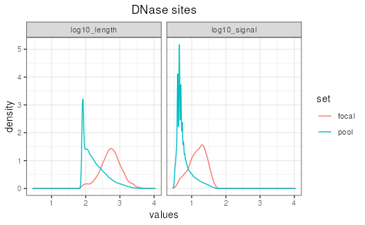
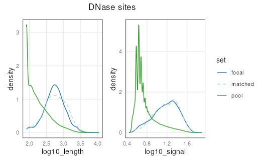
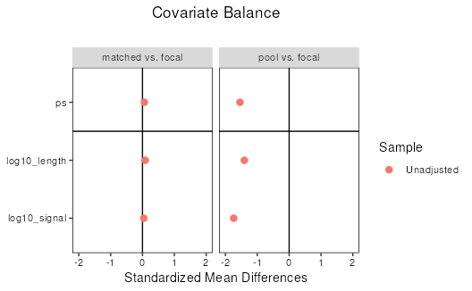

vignettes/matching_pool_set.Rmd
matching_pool_set.RmdmatchRanges() performs subset selection on a pool of
ranges such that chosen covariates are distributionally matched to a
focal set of ranges. However, the generation of a set of pool ranges is
not a trivial task. This vignette provides some guidance for how to
generate a pool of ranges.
For this analysis, we use DNase peaks as a measure of open chromatin,
and ChIP-seq for JUN peaks as a measure of JUN binding. Suppose we are
interested in the properties of chromatin accessibility, but suspect
that JUN-binding impacts accessibility. We can use
matchRanges() to control for the DNase signal and the
length of the site so we can compare our JUN-bound sites (i.e., our
focal set) to sites where JUN is not bound (i.e., our
pool set).
First, we use AnnotationHub to access
GRanges for DNase and JUN narrowPeaks in human (hg19)
GM12878 cells:
library(AnnotationHub)
ah <- AnnotationHub()
dnase <- ah[["AH30743"]]
junPeaks <- ah[["AH22814"]]
dnase## GRanges object with 271214 ranges and 6 metadata columns:
## seqnames ranges strand | name score
## <Rle> <IRanges> <Rle> | <character> <numeric>
## [1] chrM 1-1096 * | Rank_1 2806
## [2] chrM 1210-4181 * | Rank_2 2806
## [3] chrM 8868-16581 * | Rank_3 2806
## [4] chrM 4661-5575 * | Rank_4 2784
## [5] chr21 9825397-9827624 * | Rank_5 2741
## ... ... ... ... . ... ...
## [271210] chr2 99101766-99101877 * | Rank_271210 20
## [271211] chr6 319032-319131 * | Rank_271211 20
## [271212] chr1 117329477-117329556 * | Rank_271212 20
## [271213] chr1 45985571-45985660 * | Rank_271213 20
## [271214] chr2 101185965-101186044 * | Rank_271214 20
## signalValue pValue qValue peak
## <numeric> <numeric> <numeric> <numeric>
## [1] 76.6491 280.660 271.178 485
## [2] 76.6491 280.660 271.178 2340
## [3] 76.6491 280.660 271.178 5029
## [4] 76.1730 278.495 271.178 288
## [5] 75.2208 274.173 268.040 814
## ... ... ... ... ...
## [271210] 2.15692 2.00390 0.46416 71
## [271211] 2.15692 2.00390 0.46416 40
## [271212] 2.19528 2.00202 0.46235 43
## [271213] 2.19528 2.00202 0.46235 42
## [271214] 2.19528 2.00202 0.46235 26
## -------
## seqinfo: 298 sequences (2 circular) from hg19 genomeSince we want to control for accessibility, we can use the
signalValue from the DNase peaks as a covariate. DNase
sites are also different lengths. If we suspect length might impact
accessibility differently at JUN-bound sites, we can include it as a
covariate as well. For visualization, let’s convert these to log-scale
using mutate() from plyranges:
focal and pool sets
Next we define our focal and pool sets. The focal set
contains the feature of interest (i.e., DNase peaks bound by JUN),
whereas the pool set lacks this feature (i.e., unbound
DNase peaks). matchRanges() is designed to handle datasets
that can be binarized into these two distinct groups. With
plyranges it is easy to filter DNase sites by overlap (or
lack of overlap) with JUN peaks:
## Define focal and pool
focal <- dnase |>
filter_by_overlaps(junPeaks)
pool <- dnase |>
filter_by_non_overlaps(junPeaks)The focal set must be smaller than the pool set for matching to work correctly. Matching is most effective when the pool set is much larger and covers all values in the focal set.
length(focal)## [1] 2490
length(pool)## [1] 268724## [1] 107.9213Before matching, the focal set shows a different distribution of length and signal than the pool set:
## Before matching, focal shows higher
## signalValue than pool
library(tidyr)
library(ggplot2)
bind_ranges(focal=focal,
pool=pool,
.id="set") |>
as.data.frame() |>
pivot_longer(cols=c("log10_length", "log10_signal"),
names_to="features",
values_to="values") |>
ggplot(aes(values, color=set)) +
facet_wrap(~features) +
stat_density(geom='line', position='identity') +
ggtitle("DNase sites") +
theme_bw() +
theme(plot.title=element_text(hjust=0.5))
matchRanges()
To control for these differences, we can use
matchRanges() to select a subset of unbound DNase sites
from the pool that have the same distribution of length and signal.
library(nullranges)
set.seed(123)
mgr <- matchRanges(focal=focal,
pool=pool,
covar=~log10_length + log10_signal,
method='rejection',
replace=FALSE)
mgr## MatchedGRanges object with 2490 ranges and 8 metadata columns:
## seqnames ranges strand | name score
## <Rle> <IRanges> <Rle> | <character> <numeric>
## [1] chr13 42242369-42242758 * | Rank_13919 498
## [2] chr4 148721069-148721751 * | Rank_6820 733
## [3] chr1 167522710-167523305 * | Rank_8764 655
## [4] chr22 36771568-36771911 * | Rank_61304 119
## [5] chr12 27863138-27864123 * | Rank_9430 628
## ... ... ... ... . ... ...
## [2486] chr1 236311692-236312194 * | Rank_31397 247
## [2487] chr9 135257201-135258016 * | Rank_10743 592
## [2488] chr6 2842064-2842353 * | Rank_46877 165
## [2489] chr11 1542262-1543612 * | Rank_9405 628
## [2490] chr7 90561352-90561734 * | Rank_44121 176
## signalValue pValue qValue peak log10_signal log10_length
## <numeric> <numeric> <numeric> <numeric> <numeric> <numeric>
## [1] 19.99541 49.8679 46.71972 107 1.322124 2.59218
## [2] 21.33174 73.3284 69.75892 208 1.348923 2.83506
## [3] 22.83272 65.5173 62.09552 349 1.377174 2.77597
## [4] 7.14122 11.9399 9.63032 258 0.910689 2.53782
## [5] 23.80406 62.8724 59.48975 599 1.394523 2.99432
## ... ... ... ... ... ... ...
## [2486] 10.63635 24.7928 22.1325 223 1.065817 2.70243
## [2487] 19.80561 59.2923 55.9855 398 1.318180 2.91222
## [2488] 8.06895 16.5491 14.1081 93 0.957557 2.46389
## [2489] 23.80406 62.8724 59.4898 968 1.394523 3.13098
## [2490] 8.43572 17.6751 15.2014 173 0.974775 2.58433
## -------
## seqinfo: 298 sequences (2 circular) from hg19 genomeNow let’s use the plotCovariate() function with
patchwork to visualize how similar our matched distribution
is to focal:
library(patchwork)
lapply(covariates(mgr),
plotCovariate,
x=mgr,
sets=c('f', 'm', 'p')) |>
Reduce('+', x=_) +
plot_layout(guides="collect") +
plot_annotation(title="DNase sites",
theme=theme(plot.title=element_text(hjust=0.40)))
An important part of propensity-score matching, is assessing
similarity, or balance, between the focal and matched sets. One way is
to visually examine the distributions as we have done above. Another way
is to report summary statistics about the two sets. cobalt
is a package designed to specifically address covariate balance after
covariate matching. Below, we demonstrate how to use cobalt
to calculate the standardized mean differences and visualize these
statistics with a love plot. For more information about assessing
covariate balance, refer to the detailed documentation in the
cobalt vignette:
vignette("cobalt", package = "cobalt").
library(cobalt)
res <- bal.tab(f.build("set", covariates(mgr)),
data=matchedData(mgr)[!set %in% 'unmatched'],
distance="ps",
focal="focal",
which.treat="focal",
s.d.denom="all")
res## Balance by treatment pair
##
## - - - focal (0) vs. matched (1) - - -
## Balance Measures
## Type Diff.Un
## ps Distance 0.0594
## log10_length Contin. 0.0862
## log10_signal Contin. 0.0415
##
## Sample sizes
## focal matched
## All 2490 2490
##
## - - - focal (0) vs. pool (1) - - -
## Balance Measures
## Type Diff.Un
## ps Distance -1.5447
## log10_length Contin. -1.4070
## log10_signal Contin. -1.7405
##
## Sample sizes
## focal pool
## All 2490 268724
## - - - - - - - - - - - - - - - - - - - - - - - - -
The “focal vs. matched” comparison shows much lower standardized mean differences than “focal vs. pool”, indicating that the matched set has been successfully controlled for covariates of DNAse site length and signal.